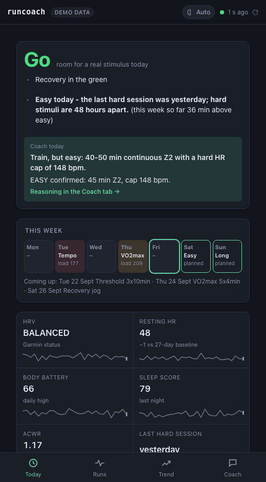
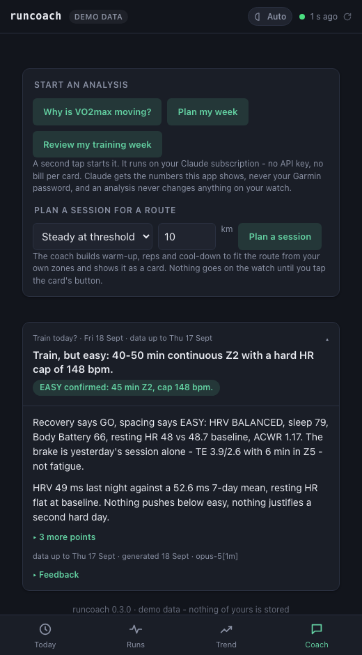
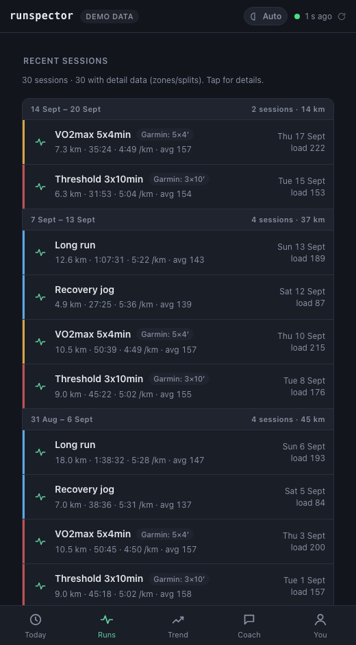

Runspector — free AI running coach for Garmin
A free, open-source AI running coach for Garmin watches. Runspector syncs your Garmin Connect data - HRV, sleep, Body Battery, resting heart rate, training load and every run - into a file on your own computer, decides each day whether to go hard, keep it easy or rest, and lets Claude explain why and plan your week: in a small local web app, or as a Garmin MCP server in Claude Code and Claude Desktop. No cloud, no API key needed - your own Claude Code sign-in is enough.



Everything shown is the built-in synthetic athlete: runspector serve --demo needs no account.
Install
uv tool install runspector
runspector serveWithout uv: pipx install runspector. runspector serve opens
http://127.0.0.1:8765; sign in to Garmin there (Setup → Sign in to Garmin), and the first sync
starts right after. The coach cards run on Claude Code with your own Claude account:
Connecting Claude.
In Claude Code or Claude Desktop
claude mcp add runspector -- runspector mcpThen ask: "should I train today?" In Claude Desktop, add it to the MCP configuration (Settings → Developer → Edit Config):
{ "mcpServers": { "runspector": { "command": "uvx", "args": ["runspector", "mcp"] } } }What is different
The verdict is code
Go hard, keep it easy or rest comes from written rules over your HRV, sleep, Body Battery, resting heart rate and load. Claude explains that decision; it does not invent it.
Local-first and free
Your data sits in a file on your own computer. No cloud backend, no account beyond Garmin's, no fee. Open source under MIT.
Nothing on the watch without a yes
A session goes onto your Garmin watch only after you say yes to exactly that session, and "take it back off" undoes it.
Questions people ask
Does Garmin have an AI coach?
Garmin offers three kinds of coaching of its own. Garmin Coach is a set of free adaptive training plans in Garmin Connect for a 5K, 10K or half marathon, which adapt to the runs you log. Many watches show daily suggested workouts, built from your activities once the watch has a training status and a VO2max estimate. Garmin Connect+, a paid subscription since March 2025, adds Active Intelligence: AI-powered insights and suggestions through the day, launched in beta; everything that was in Garmin Connect before stays free. Runspector reads the same Garmin data and is a different kind of tool: it decides today with every reason written out by rules you can read, lets you ask a coach in your own words, and plans sessions that go on your watch only after your yes - on your own computer.
Is there a free AI running coach for Garmin?
Runspector is free and open source (MIT). It installs from PyPI and keeps your data on your own computer. Today's verdict, your runs, the trends and the sync need nothing but your Garmin account. The coach itself runs on Claude, through Claude Code or Claude Desktop with your own Claude account; Connecting Claude says which plan that needs. Garmin's own Garmin Coach plans are free as well.
Which Garmin watches work?
Any Garmin watch that syncs to Garmin Connect gives runspector your runs. Today's verdict reads four recovery signals - HRV status, sleep score, Body Battery and your resting heart rate against your own baseline - plus your training load. A watch that records no HRV status overnight still gets a verdict from the others, but a GO that rests on fewer than two signals becomes EASY: thin data is no green light. To put sessions on the watch, it has to run structured workouts from Garmin Connect, with heart-rate or pace targets. Current Forerunner, fenix, epix, Venu and Instinct models are examples; whether a model records HRV status or Body Battery, its specifications on Garmin's site say.